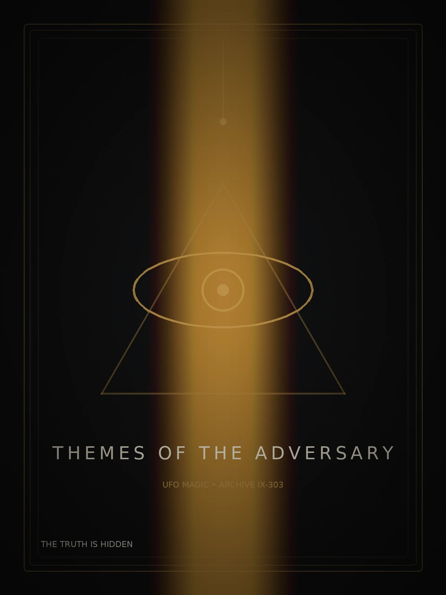
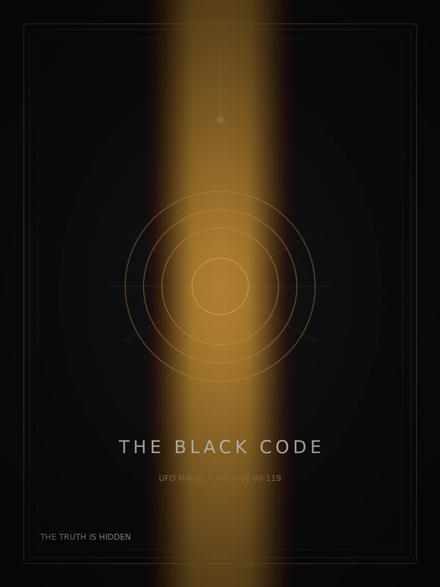
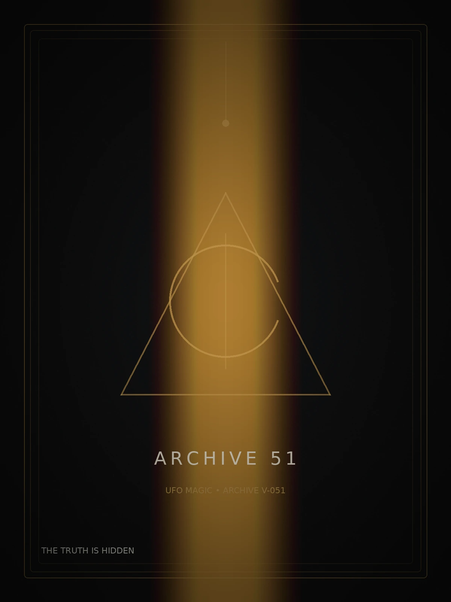
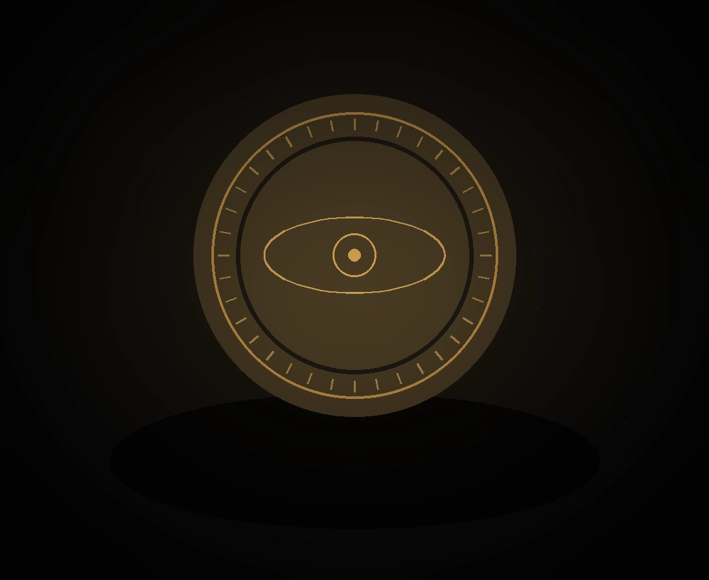
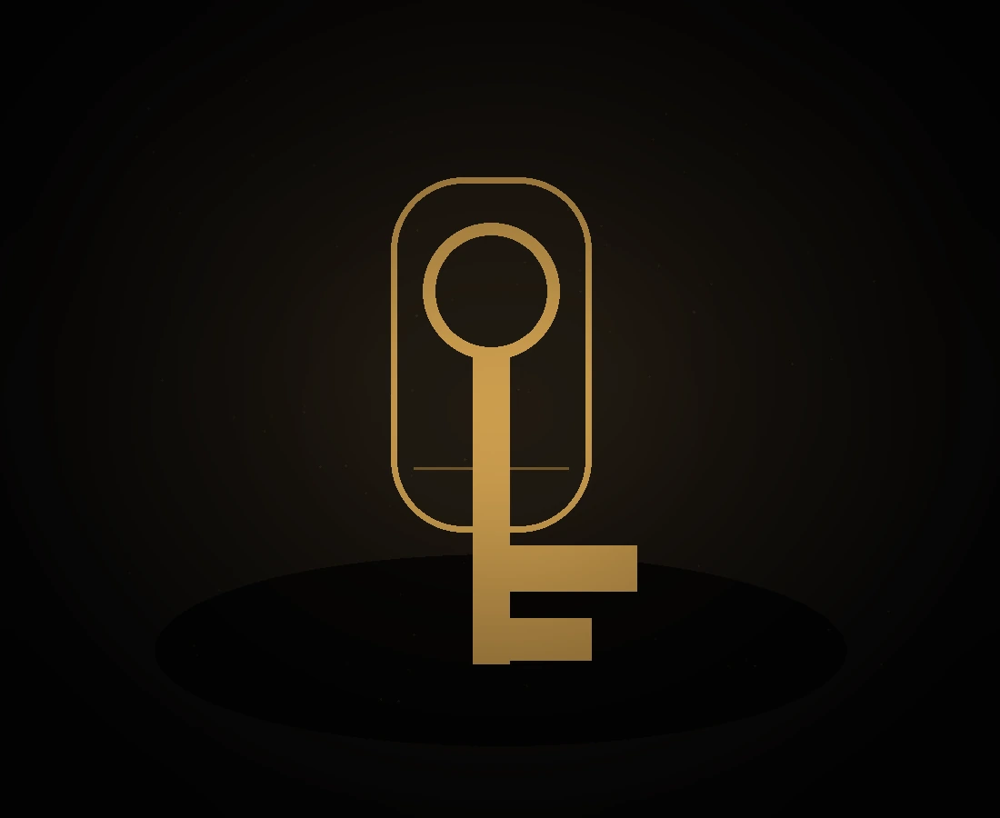
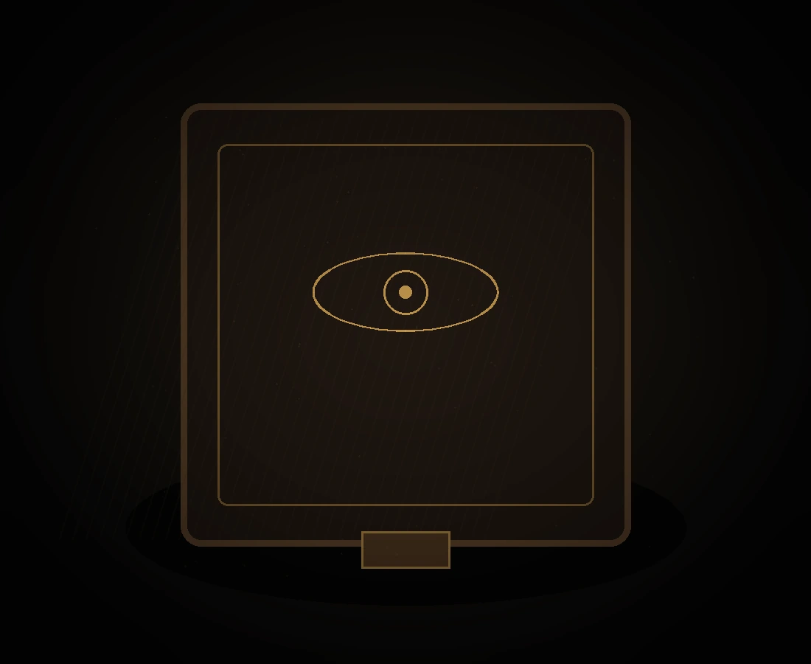

UFO MAGIC / IX-303
ARCHIVE IX–303
مضامین شیطان
کاوشی تصویری و روایی در نمادها، روایتهای پنهان و معماری تاریک قدرت.
درخواست دسترسی↙UFO MAGIC / SECURE TERMINAL
اینجا فروشگاه نیست؛ نقطه ورود به آرشیوی است که برای همه ساخته نشده.
سطح دسترسی شما موقتاً تأیید شد.AN ARCHIVE BEYOND THE VISIBLE
UFO MAGIC مرز میان کتاب، شیء کلکسیونی و سند محرمانه را از بین میبرد. هر اثر بخشی از یک روایت بزرگتر است؛ روایتی درباره نمادها، تمدنها، قدرت و چیزهایی که در حاشیه تاریخ باقی ماندهاند.
THE PRIVATE LIBRARY
نسخههای محدود با طراحی کلکسیونی، جزئیات چاپ ممتاز و بستهبندی اختصاصی آرشیو.

کاوشی تصویری و روایی در نمادها، روایتهای پنهان و معماری تاریک قدرت.
درخواست دسترسی↙
پروندهای درباره زبان رمز، هندسه آیینی و الگوهایی که قرنها تکرار شدهاند.
درخواست دسترسی↙
بازسازی اسناد، گزارشها و روایتهای متناقض پیرامون ناشناختهترین پرونده قرن.
درخواست دسترسی↙OBJECTS WITH A MEMORY

آلیاژ برنز تیره، پرداخت دستی و حکاکی شماره آرشیو.

قطعهای نمادین برای نسخههای ویژه و پروندههای مهرومومشده.

چرم تیره، نشان برنجی و فضای اختصاصی نگهداری اسناد.
AUTHORIZED EYES ONLY
برای مشاهده لایه پنهان، نشانگر را روی پرونده نگه دارید یا با صفحهکلید روی آن فوکوس کنید.
گزارش ثبت یک در ارتفاع و قطع همزمان تمام سیگنالهای محلی.
سه شیء بدون امضای حرارتی، با آرایشی هندسی و سکوت کامل راداری مشاهده شدند.
لوحی که در فهرست رسمی حفاری وجود ندارد و بخشی از را شرح میدهد.
نماد مرکزی با نقشهای ستارهای همپوشانی دارد که هزاران سال بعد ثبت شده است.
نسخه تطبیقی گزارشهای شاهدان با حذف کامل نامها، مختصات و اصلی.
تفاوت روایتهای رسمی دقیقاً از ساعت ۲۳:۱۷ آغاز میشود؛ لحظهای که پرونده طبقهبندی شد.
A CHRONOLOGY OF SIGNALS
برای حرکت در خط زمانی اسکرول کنید. هر نقطه بخشی از یک روایت پیوسته است.
همزمانی معماری آیینی، ستارهشناسی و نماد چشم در ساختار قدرت.
لوحهای آسمانی، خدایان فرودآمده و نخستین تقویمهای دقیق.
شبکهای از دانش، ثروت و اسنادی که پس از انحلال ناپدید شدند.
بازگشت هندسه مقدس، رمزنگاری تصویری و انجمنهای بسته.
حادثهای که زبان مدرن پدیدههای ناشناس را برای همیشه تغییر داد.
منطقهای خارج از نقشه عمومی؛ محل تلاقی فناوری و شایعه.
اطلاعات دیگر پنهان نیست؛ فقط میان حقیقت و نویز دفن شده است.
برای دریافت موجودی نسخههای محدود، زمان انتشار پروندههای جدید و دسترسی به سفارش اختصاصی، وارد پروتکل شوید.